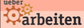

Electronic.Body.Movement
Am Samstag ist im Kramladen Electronic.Body.Movement das heisst Industrial, Futurepop all Night long. Es legen auf: Ingo, Artefact und conflux.
Beginn 21.00 Uhr, im Kramladen der TU
Am Samstag ist im Kramladen Electronic.Body.Movement das heisst Industrial, Futurepop all Night long. Es legen auf: Ingo, Artefact und conflux.
Beginn 21.00 Uhr, im Kramladen der TU
 Am Samstag ist wieder Beatclub dancehall & reggae night – “The Birthday Jam”
Am Samstag ist wieder Beatclub dancehall & reggae night – “The Birthday Jam”
Es legen auf:
Meckie Messer Muzak
Selectah Milla
Tuff Blend Soundsystem feat. MC Wozu
ab 21.00 Uhr, Eintritt 3 EUR, Kramladen, Uni, Kaiserslautern
Neuer Treff in KL: Crosslounge – Der Treff mit Tiefgang für junge Erwachsene in Kaiserslautern. Geplant ist u.a. Powerpoint Karaoke – alles weitere bei leobard
Start ab 19:30 Uhr, Freie Evangelische Gemeinde Kaiserslautern, Pariser Str. 300
In Zusammenarbeit mit dem JUZ präsentiert der JA!ZZEVAU Kaiserslautern hochkarätige Jazzensembles. An diesem Abend sind mit dabei: Jens Bunge (Mundharmonika) und Uli Wagner (Gitarre). Quelle: Website
Einlass 20 Uhr, Eintritt: 6,50 , ermäßigt 5
Als Schwerpunkt des Jahresthemas Arbeit findet das bundesweite Filmfestival “ueber arbeiten” vom 22. März – 28.März im Union Studio für Filmkunst Kaiserslautern statt.
Gezeigt werden u.a.:
China Blue, Enron, Des Wahnsinns letzter Schrei, Abschalten!, Herb mein Herbst, Zwischen den Welten, John & Jane, Behind the Couch, Wir leben im 21. Jahrhundert
http://www.provinzkino.de/templates/filmkuki/0703/pdf/0703union.pdf
Am Montag spielen Erin Tobey & Francois Viros im Underground:
Erin Tobey: fragile Akustikmusik mit Punkeinschlag
Stellt euch einen Kaugummi-Automat vor mit kleinen bunten Plastik-Bällen vor, die gefüllt sind mit Singer-Songwritern wie Kimya Dawson, Joanna Newsom, oder Cat Power. Erin Tobey wohnt zur Zeit in Richmond (Virginia) und hat früher in Abe Froman gespielt. Zur Zeit spielt sie auch in der Band Mt. Gigantic.
MP3s: www.myspace.com/erintobey
Francois Virot: hypnotisierender Songwriter-Popzwischen LoFi und Uh-Ohhhs
Francouis Virot bietet den Gegenentwurf zum modern state of Songwriting. Seine Musik erinnert an detailverliebte 60er Jahre Soundmalerei und wurde mit Bands wie Animal Collective oder Guided by Voices verglichen. Francouis wohnt in Lyon und spielt auch in der Band Clara Clara. Quelle: Else Joffi Newsletter
Mp3s: www.myspace.com/francoisvirot
Beginn: 21, Uhr im Underground
 Am Samstag gibt’s House im Coppa. Es legen auf:
Am Samstag gibt’s House im Coppa. Es legen auf:
Marcus Meinhardt (Wategate/Berlin)
ACME
sowie Verlosung Schnitt19 Hairstyle-Gutscheine
Eintritt Frei!
Die Musiker der Band DIVINUS Daniel Ott (voc), Christian Herrle (git); Matthias Mayer (drums), Matthias Klaes (bass) und Steffen Seel (keys), beschreiben ihren Musikstil auf ihrer Homepage www.divinusmetal.com als “atmosphärischen Melodic Metal. Durch die geschickte Kombination von packenden Gitarrenriffs, melodischen Keyboardpassagen, rollenden Bassläufen, kernigem aber anspruchsvollem Drumming und abwechslungsreichem Gesang sind Vergleiche mit Iced Earth, Blind Guardian oder auch Dream Theater keine Seltenheit”. (www.divinusmetal.com und www.simpathetic.de) Quelle: Website
Einlass 20 Uhr, Eintritt: 6,50 , ermäßigt 5
Für alle die mal wieder einen ruhigen Abend brauchen: www.spieleabend-kl.de.vu!
Am Samstag wird im GdvE e.v. (Eisenbahnstraße 67/Augustaallee) gespielt was das Herz begehrt: Siedler von Catan, Alhambra, Carcassonne, Tabu, Monopoly, Ligretto, Bohnanza, Karrierepoker, Risiko, 6 Nimmt, usw. Es gibt auch kostenlos Knabberzeuchs, Getränke sowie Musik von Rock bis Pop.
Ab 19:30 Uhr
http://www.spieleabend-kl.de.vu
Eintritt frei!
 Die nächste Austellung von Neocon ist ein Europapremiere! Die israelische Künstlerin Nava Astrachan zeigt im Projektraum Neocon erstmalig die Gemäldeserie calendar girls. Diese untersucht Rollenklischees in Mode- und Kunstwelt und stellt sie einander gegenüber. Die Supermodels (En Vogue), wie sie auf den Titelseiten der großen Modemagazine zu sehen sind, werden exemplarisch übersetzt in die Bildwelten großer Meister der Malerei (Boyzone). Die 12 Malereien nehmen uns mit auf eine Reise durch die letzten 500 Jahre der Kunstgeschichte und scheinen einen Hybriden aus Kunst und Pin-Up-Kalender zu bebildern. Fashion Victims in den Mühlen der Kunstmoden. Quelle: Newsletter
Die nächste Austellung von Neocon ist ein Europapremiere! Die israelische Künstlerin Nava Astrachan zeigt im Projektraum Neocon erstmalig die Gemäldeserie calendar girls. Diese untersucht Rollenklischees in Mode- und Kunstwelt und stellt sie einander gegenüber. Die Supermodels (En Vogue), wie sie auf den Titelseiten der großen Modemagazine zu sehen sind, werden exemplarisch übersetzt in die Bildwelten großer Meister der Malerei (Boyzone). Die 12 Malereien nehmen uns mit auf eine Reise durch die letzten 500 Jahre der Kunstgeschichte und scheinen einen Hybriden aus Kunst und Pin-Up-Kalender zu bebildern. Fashion Victims in den Mühlen der Kunstmoden. Quelle: Newsletter
Eröffnung ist am Fr, 16 März um 19.00 Uhr
ab 17. März 10. April 2007 geöffnet von MiFr 1722 Uhr
Neocon, Projektraum für Kunst, Richard Wagner Str. 78
www.neocontemporary.org